| 日付 | 2012年8月25日（土） - 2012年8月26日（日） | ||||
|---|---|---|---|---|---|
| 山域 | 八ヶ岳 | ||||
| メンバー | 家族（妻、長女・1歳） | ||||
| 山行形態 | 子連れ1泊2日小屋泊 | ||||
| アクセス | 車 | ||||
| ルート (Map) |
|
この週末は野球観戦にでも行こうかと考えていたのだが、
天気予報を見ると2日とも晴れと出ている。
急遽予定を変更し、夏休みにできなかった山小屋泊の登山を計画する。
といっても直前の計画のため山小屋の個室をとるのは困難だ。
まずは小屋の予約をとってから、山とコースを決定することにする。
白根御池小屋、黒百合ヒュッテと断られ、3軒目の本沢温泉の小屋の予約に成功。
登る山は北八ヶ岳の雄峰・天狗岳と決める。
1日目
中央道を降りて佐久甲州街道を北上する。
左手には青空の下、八ヶ岳がきれいに見えている。
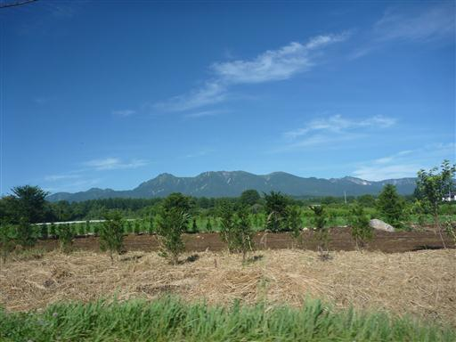
みどり池入口駐車場に到着。標高1570m。
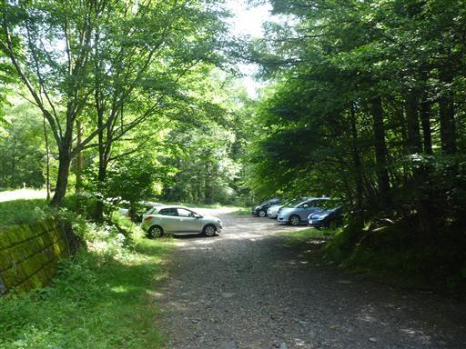
ゲートを抜けて登山道に入っていく。
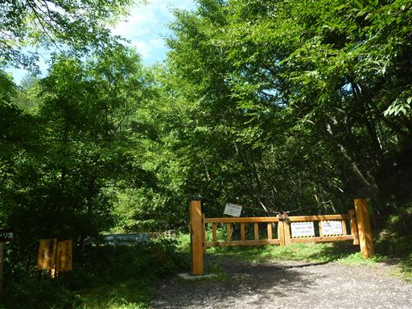
道端の木がなぜかひっくり返っている。
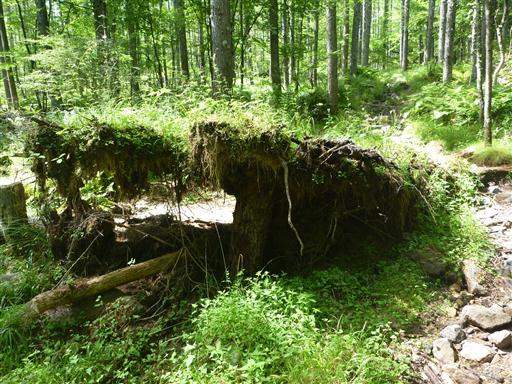
美しい針葉樹林帯の中を登っていく。傾斜は比較的緩くて歩きやすい。
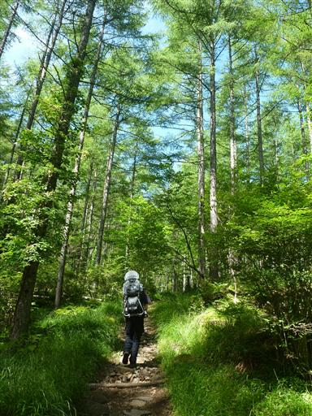
こまどり沢の標識。
「みどり池 はっても30分」「稲子湯 何となく1時間」と書かれている。
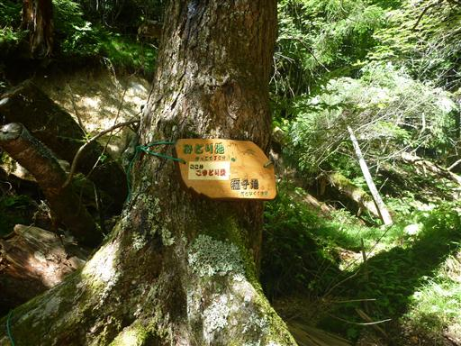
ミドリ池に到着。名前の通り緑色の水を湛えたひっそりとした池だ。
背後には明日登る予定の天狗岳が見えている。
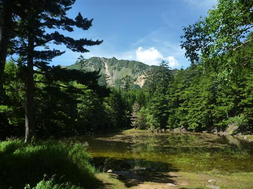
キバナノヤマオダマキが咲いている。
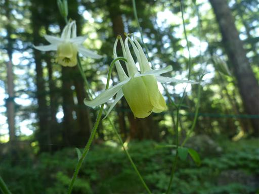
池の側にはしらびそ小屋が建っている。
展望が良いこの場所で昼食をとることにする。
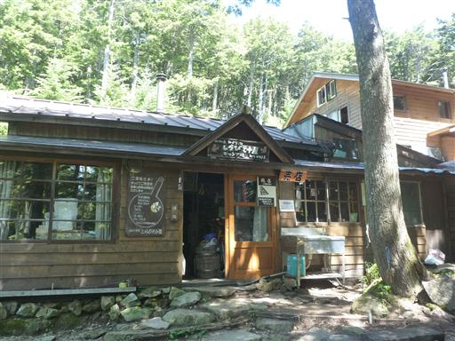
小屋の側には薪が積み上げられている。

ミドリ池を出発し本沢温泉を目指す。
ものすごい高密度で細い木が立ち並んでいる。
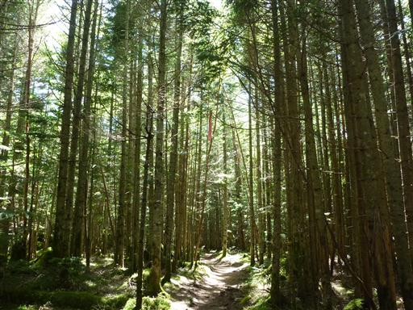
ぬかるんでいる場所には木道が設置されている。
辺りは苔に覆われていて非常に美しい場所だ。
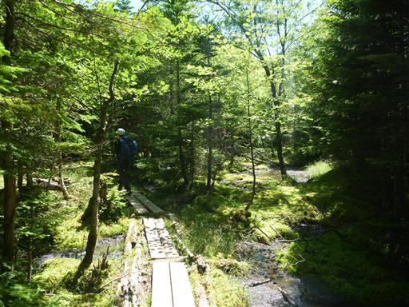
足元には透き通った水がチョロチョロと流れている。
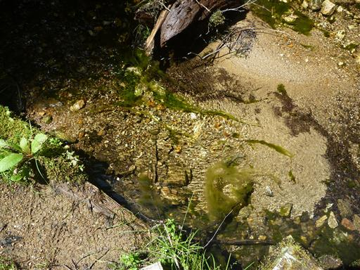
どこまで歩いても苔苔苔だ。
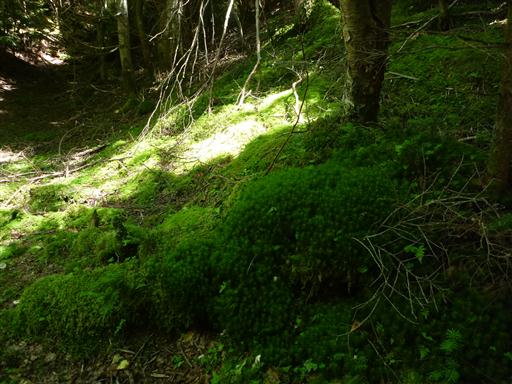
小さな尾根を越えて、沢沿いにある本沢温泉に向かって下って行く。
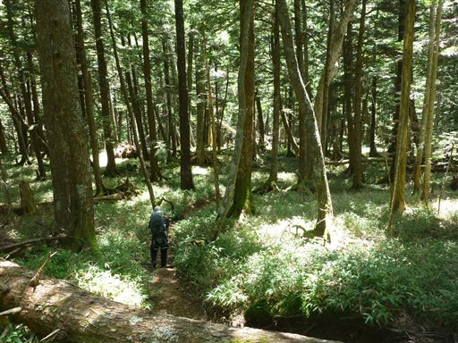
本沢温泉に続く道に合流する。
地図を見るとここは車道になっているが、普通の車ではとても走れないような道だ。
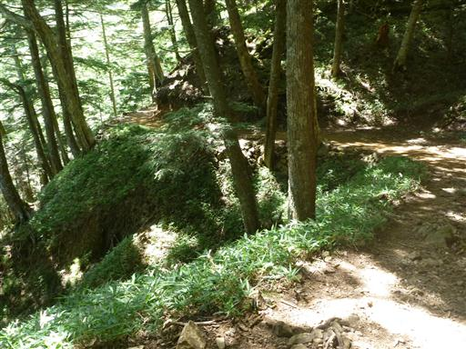
足元に茶色く染まった沢が見えてくる。
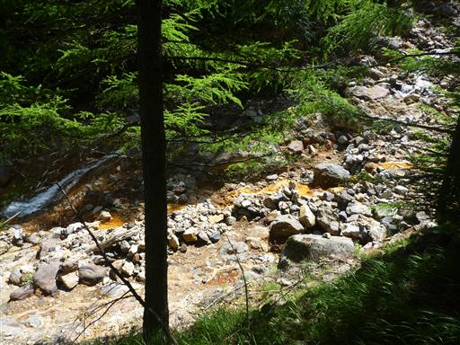
本沢温泉に到着。標高2100m。
大きな山小屋が一軒建っている。
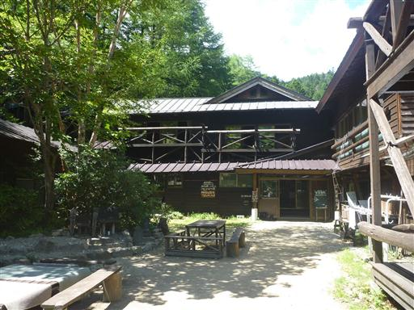
日本最高所の露天風呂との標識が掲げられている。
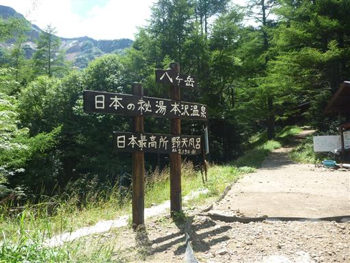
背後には硫黄岳の姿が見えている。
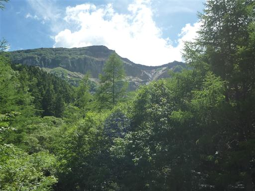
小屋の内部は階段がたくさんあり、かなり複雑な形をしている。
我々が泊まるのは新館の個室だ。子供は階段を見つけて早速登っている。
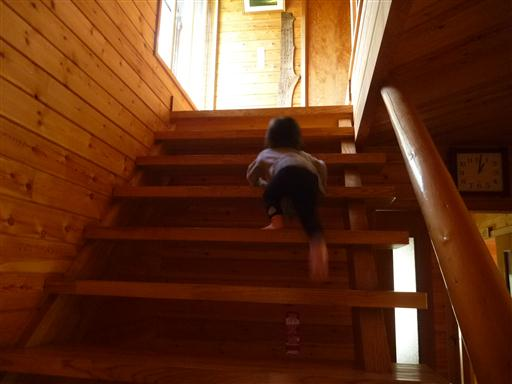
せっかくここまで来たので露天風呂に行ってみることにする。
露天風呂までは小屋から5分程度の場所にある。
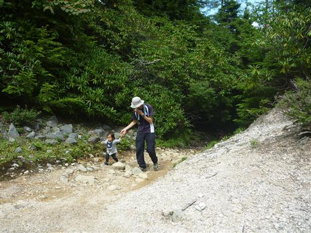
目の前には硫黄岳が大きく聳えている。
垂直に切れ落ちた絶壁は爆裂火口跡だ。
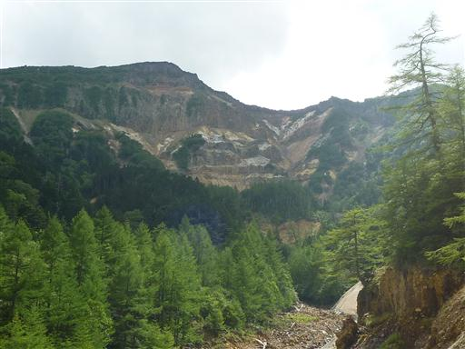
ザレた斜面を下って行く。足元に露天風呂が見えてきた。
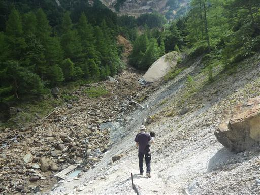
標高2150m、日本最高所の露天風呂。
男女混浴、脱衣所も何もない野趣あふれる風呂だ。
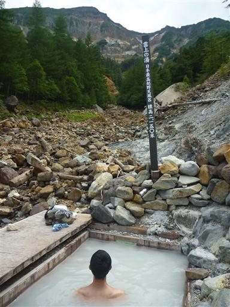
風呂からあがって小屋に戻ってくる。
大きな靴が並ぶ中、小さな靴はかわいらしい。
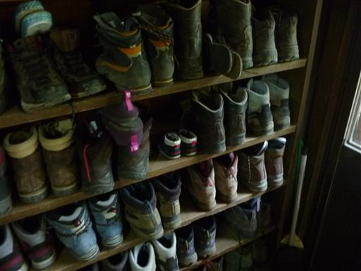
あれほど天気が良かったのに夕方になって雨が降ってくる。山の天気は変わりやすい。
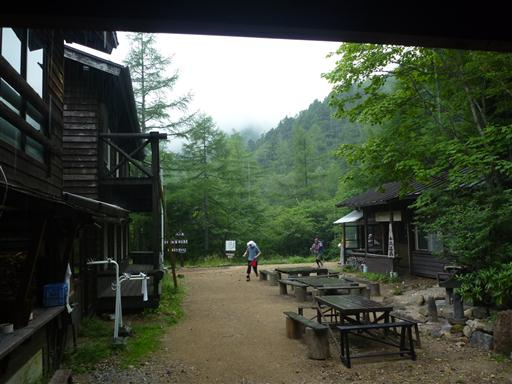
今回泊まった個室。3人で泊まるには十分な広さだ。
夜は19時に就寝。うまく子供を寝かせられたと思っていたら、
夜中の22時に目覚めて泣き出し、1時まで3時間泣きっぱなし…
個室とはいえ声は外に漏れるので、近くの部屋の人に恐らくかなりの迷惑をかけてしまった。
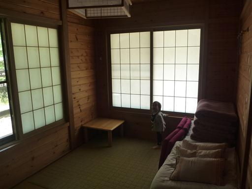